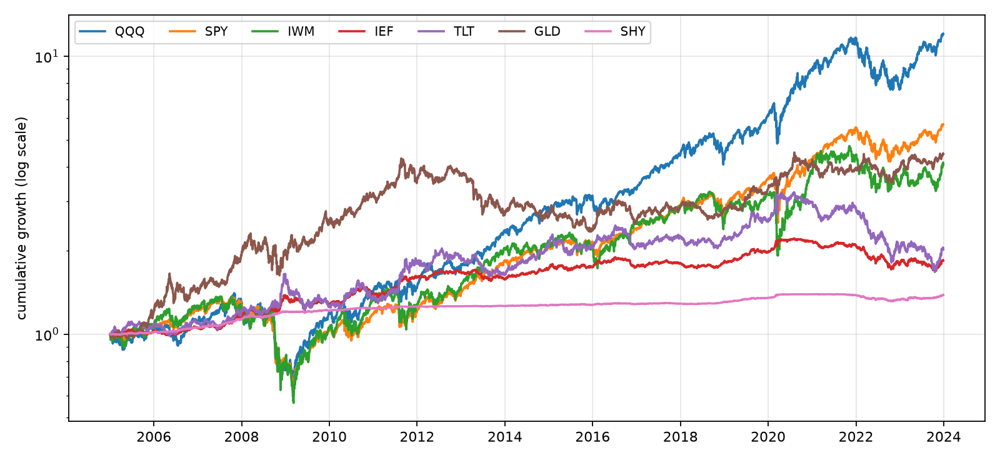
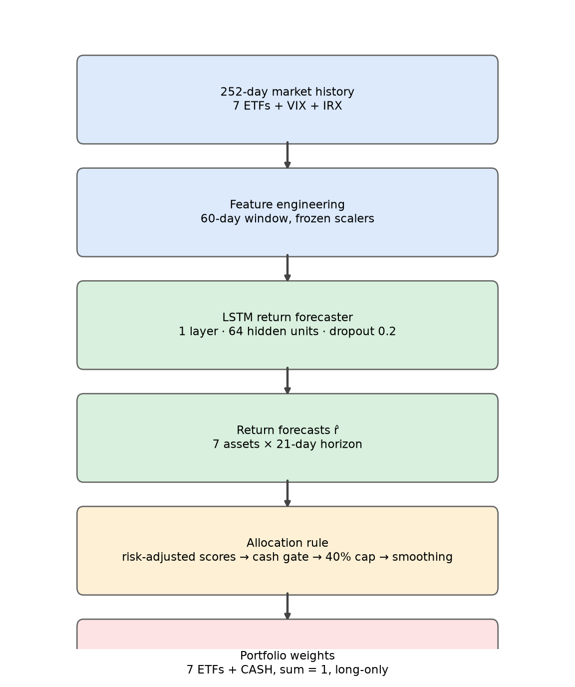
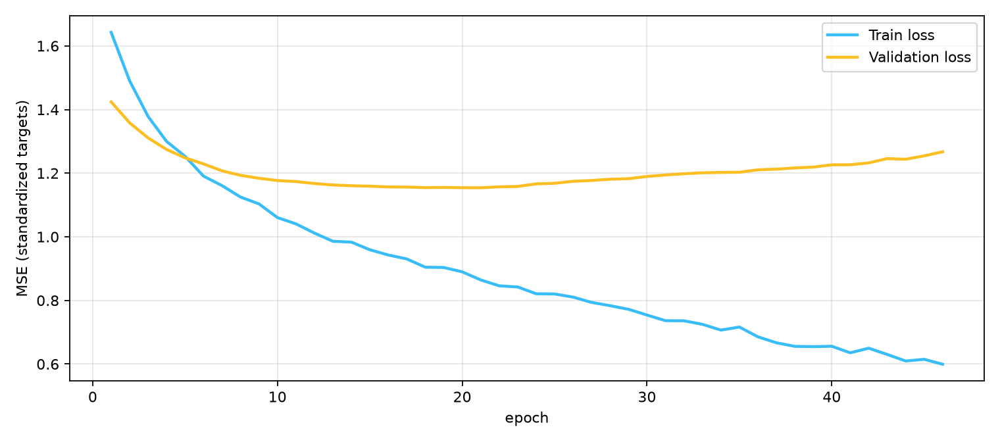
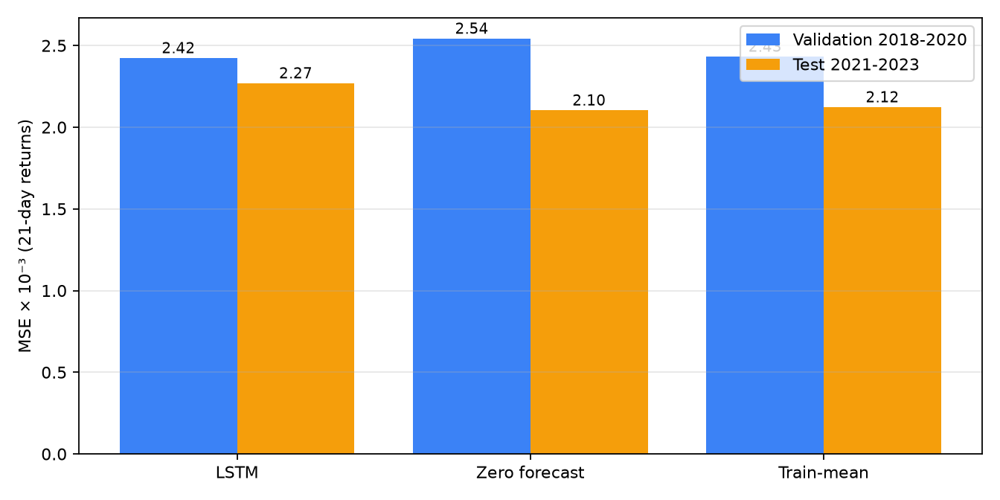
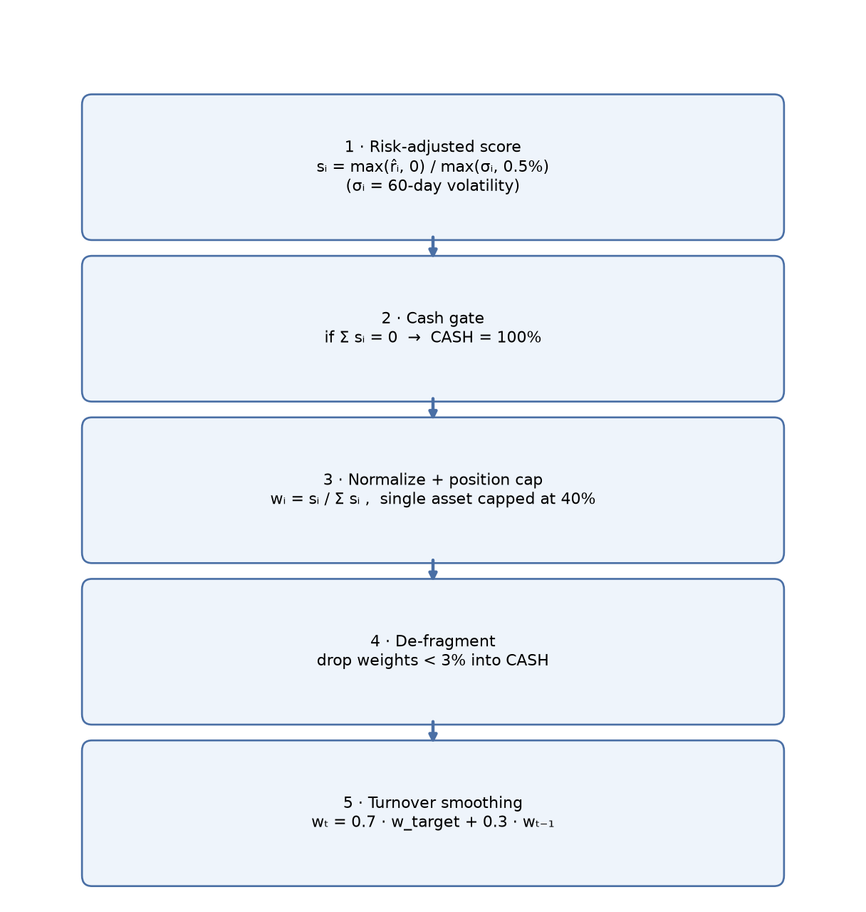
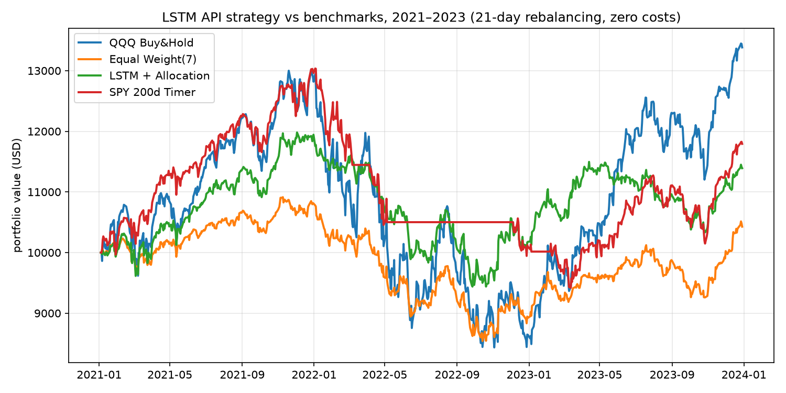
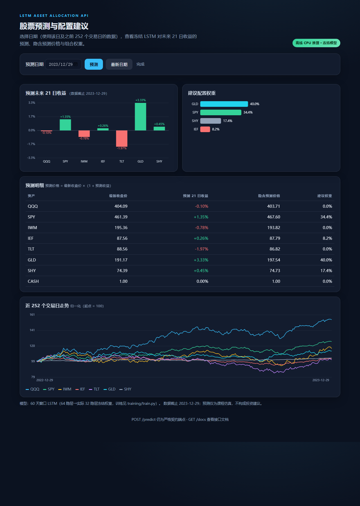

P/MA20-1、P/MA60-1P[t+21]/P[t] - 1（7 维）
(batch, 60, 73) → LSTM 32 隐层 → LayerNorm → Dropout 0.5 → Linear(7)
| # | hidden | dropout | weight decay | lr | 停止轮次 | 验证 MSE | 测试 MSE |
|---|---|---|---|---|---|---|---|
| 1 | 64 | 0.2 | 0 | 1e-3 | 16 | 2.561e-3 | 2.385e-3 |
| 2 | 32 | 0.4 | 1e-3 | 3e-4 | 32 | 2.442e-3 | 2.302e-3 |
| 3 | 16 | 0.5 | 1e-2 | 3e-4 | 41 | 2.468e-3 | 2.217e-3 |
| 4 | 32 | 0.5 | 5e-3 | 2e-4 | 46 | 2.423e-3 | 2.269e-3 |

s = max(预测, 0) / max(σ₆₀, 0.5%)
| 策略 | 总收益 | 年化波动 | Sharpe | 最大回撤 | 期末价值 |
|---|---|---|---|---|---|
| QQQ 买入持有 | +33.8% | 23.8% | 0.53 | -35.1% | $13,384 |
| 等权 7 ETF | +4.3% | 10.6% | 0.18 | -21.7% | $10,427 |
| LSTM + 配置规则 | +13.9% | 12.0% | 0.42 | -21.2% | $11,391 |
| SPY 200 日均线择时 | +17.9% | 12.8% | 0.50 | -27.8% | $11,793 |

http://127.0.0.1:8000/（可视化控制台）